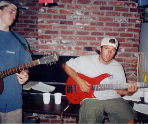

Well, we have been working on alot of new songs for the hordes of fans out there to listen to soon. Here's a list of some of our original songs. I've found it next to impossible to keep up with all of 'em..
|
| | | 
The old practice area. Memories... |
[ Home | Member Info | Songs | Booking Info ]